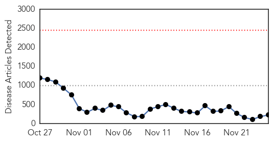
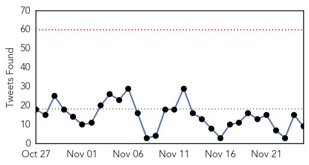
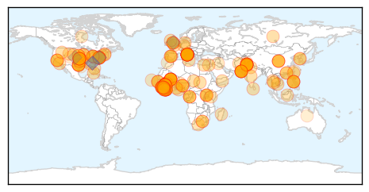
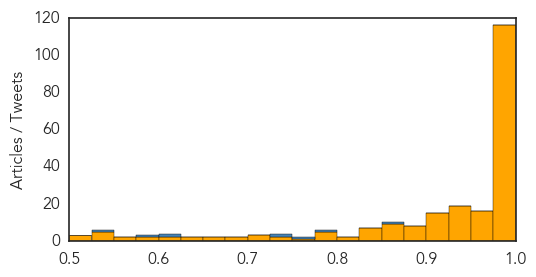

Ebola
30-Day Web Trend
0 alerts, 0 warnings

30-Day Twitter Trend
0 alerts, 0 warnings

Article Locations
Article Confidences
Top Articles:
- 1.000
- Latest Ebola News: Italian doctor in Sierra Leone contracts Ebola
- 1.000
- Read Health News & Articles at TheHealthSite.com
- 1.000
- Huron-Perth hospital protocols in place
- 1.000
- U.S. looking past Ebola to prepare for next outbreak
- 1.000
- False alarm: Faisalabad Patient died of Hepatitis C, Dengue not Ebola
- 1.000
- the edge of knowledge
- 1.000
- Doctor working in Sierra Leone is Italy's first Ebola case
- 1.000
- Top UN health officials take joint mission to Mali in support of Ebola response
- 1.000
- UN Response Mission Admits Deadline Will Not Be Met To Contain The Outbreak
- 1.000
- Top UN health officials take joint mission to Mali in support of Ebola response
- 1.000
- Eighth Person Tests Positive In Mali, Which Is Monitoring 271 People For Symptoms
- 1.000
- Mali Announces New Case Of Ebola, Six Dead
- 1.000
- Ebola scare — Faisalabad man died of dengue, hepatitis: NHSRC
- 1.000
- Italy Confirms First Ebola Case; Crisis Splitting in Different Directions in West African Countries
- 1.000
- Ebola epidemic exposes the sickness of the global economic and political system
- 1.000
- Mali confirms two new Ebola cases ahead of opening of UN office: UN spokesman
- 0.999
- Mali confirms eighth Ebola case, monitoring 271 people
- 0.999
- Costs of responding to Ebola adding up
- 0.999
- Time for Bill O’Reilly to make amends for his panicked Ebola commentary
- 0.999
- Ghana records 120 Ebola suspected cases
- 0.999
- Merck enters partnership to develop Ebola vaccine
- 0.999
- South Africa's response to Ebola outbreak
- 0.999
- Efforts to combat Ebola in Liberia proving successful
- 0.999
- Archives > News > Galt’s state rep leads Ebola hearing
- 0.999
- Mali confirms eighth Ebola case
- 0.999
- Archives > News > Elk Grove’s state rep leads Ebola hearing
- 0.999
- Italy's first Ebola victim is flown into Rome in specially sealed plane
- 0.999
- Italian doctor with Ebola returning for treatment
- 0.999
- Faisalabad Patient died of Hepatitis C, Dengue not Ebola.
- 0.999
- U.N. Mission will Miss Dec. 1 Goal for Containing Virus
- 0.999
- Deadline to curb Ebola will not be met -UN
- 0.999
- Pakistani patient dies of dengue, hepatitis C: WHO - Xinhua
- 0.999
- Faisalabad man died of dengue and hepatitis not Ebola
- 0.999
- UPDATE 2-Sierra Leone Ebola burial workers dump bodies in pay protest
- 0.999
- Doctor’s death marks second U.S. Ebola fatality
- 0.999
- The Monrovia Medical Unit is Aiding Healthcare Workers in the Fight Against Ebola
- 0.999
- Faisalabad hospital patient not suffering from Ebola
- 0.998
- Gandhi Hospital gears up to tackle Ebola
- 0.998
- Last batch of PH peacekeepers from Liberia now home
- 0.998
- Mali confirms two new Ebola cases
- 0.998
- Ebola Watch Ghana Schools Budumburam Residents on Ebola
- 0.998
- UN Will Miss December 1 Deadline To Contain Ebola
- 0.998
- Sierra Leone Ebola burial workers dump bodies in pay protest
- 0.998
- Ebola workers in Sierra Leone dump bodies
- 0.998
- Sudan Vision Daily
- 0.997
- Ebola victims’ bodies left in hospital doorway by protesting burial teams
- 0.997
- Suspected Ebola patient dies in Faisalabad
- 0.997
- Mali confirms eighth Ebola case, monitoring 271 people
- 0.997
- First suspected Ebola patient dies in Pakistan
- 0.996
- Italian Ebola patient receives experimental drug
Showing top 50 articles...
Top Tweets:
- 0.867
- also when ebola beds started going empty ebola stopped being front-page news in US
- 0.798
- Both! Diseasedetectives flown in AND work w/ local doctors nurses & health officials in countries affected by Ebola outbreaks
- 0.762
- 10 Things You Really Need to Know About Ebola: 5 If you’re feeling sick think flu not Ebola. http://t.co/VZU6AG5s94
- 0.739
- RT: 10 Things You Really Need to Know About Ebola: 5 If you’re feeling sick think flu not Ebola. http://t.co/VZU6AG5s94
- 0.737
- In West Africa countries at risk of Ebola remain on high alert
- 0.623
- Information on the Survivability of the Ebola Virus in MedicalWaste http://t.co/WGLahpEWMb
- 0.611
- RT: National Ebola response center (NERC) claims to av discovered 6000 ghost health workers inc some collecting double allowan…
- 0.581
- 10 Things You Really Need to Know About Ebola: 3 Ebola outbreak is not affecting the safety of air travel. http://t.co/UXmit4utMk
- 0.535
- RT: 10 Things You Need to Know About Ebola: 7 People returning from countries w/ Ebola don’t pose a danger to you. http://t.co/1M…
Unknown
30-Day Web Trend
1 alerts, 0 warnings

30-Day Twitter Trend
1 alerts, 0 warnings

Article Locations


Article Confidences

Top Articles:
- 0.989
- Number of Flu Cases Surpasses the Peak Month Last Flu Season - KXXV-TV News Channel 25 - Central Texas News and Weather for Waco, Temple, Killeen
- 0.988
- Flu season is here. Get vaccinated.
- 0.951
- 47 dead as plague spreads to Madagascar capital - Panorama
- 0.951
- 47 dead as plague spreads to Madagascar capital
- 0.950
- SGGP English Edition- Vietnam monitors imported creatures in border gates on alert for plague
- 0.938
- Patients screened after 'difficult to treat' bug hits intensive care unit at Royal Victoria Hospital Belfast
- 0.917
- Chicago Tribune
- 0.917
- Chicago Tribune
- 0.917
- Chicago Tribune
- 0.917
- Chicago Tribune
- 0.917
- Chicago Tribune
- 0.917
- Chicago Tribune
- 0.917
- Chicago Tribune
- 0.917
- Chicago Tribune
- 0.917
- Chicago Tribune
- 0.917
- Chicago Tribune
- 0.917
- Chicago Tribune
- 0.917
- Chicago Tribune
- 0.917
- Chicago Tribune
- 0.917
- Chicago Tribune
- 0.917
- Chicago Tribune
- 0.917
- Chicago Tribune
- 0.897
- Only 3 in 10 Americans with HIV have virus under control, CDC warns
- 0.889
- 'Over 5,100 Ducks Died of Avian Flu'
- 0.882
- The most from the coast
- 0.866
- Russia warns Ukraine against NATO membership
- 0.866
- Tunisian presidential candidates head for December run-off vote
- 0.861
- 2 patients at RI Hospital diagnosed with Legionella
- 0.850
- NewsDaily
- 0.850
- NewsDaily
- 0.850
- NewsDaily
- 0.845
- 29 million Americans have diabetes, but a quarter of them don't realize it
- 0.802
- The Portland Press Herald / Maine Sunday Telegram
- 0.757
- Bird Flu Confirmed In Kuttanaad - Trivandrum News
- 0.702
- Susquehanna Health Oncologist Elected to Fellowship in American College of Physicians (Susquehanna Health)
- 0.702
- McKesson Medical Imaging Solutions Will Help St. Rita’s Medical Center Achieve Process and Efficiency Goals (McKesson Corporation)
- 0.690
- Danish Pig Industry Steps Up Biosecurity
- 0.687
- India: Kerala orders culling over bird flu fears
- 0.671
- REFILE-India reports bird flu virus at duck farm in Kerala state - OIE
- 0.642
- Kerala moves to prevent spread of bird flu
- 0.636
- 13 sick: Illegal cheese factory in Portugal leads to brucellosis outbreak
- 0.615
- Mandatory flu shot deadline looms for Vancouver Coastal Health workers
- 0.603
- Wild swans, ducks and gulls to be tested for avian flu: minister
- 0.602
- Bird Sanctuaries Come Under Lens
- 0.597
- C.Diff inquiry: Health secretary Shona Robison in pledge to ensure there will never be a repeat of Vale of Leven tragedy
- 0.589
- Pakistan polio outbreak ‘will probably be fixed next year’, says WHO
- 0.584
- CSIRO: Australia's under-resourced biosecurity puts country at risk
- 0.582
- Doubts cast on purported safety of Tehran city water
- 0.582
- Federal, Sindh govts blamed for poor medical, water facilities
- 0.567
- UND researchers confirm presence of Lyme disease in area ticks
Showing top 50 articles...
Top Tweets:
- 0.680
- En Afrique de l’Ouest les pays à risque d’Ébola en situation d’alerte maximale